Figures
Same frozen numbers as the tables. Coverage target 0.90 is the dashed line in the coverage panels.
random grouped / time Restore Fail
Overview
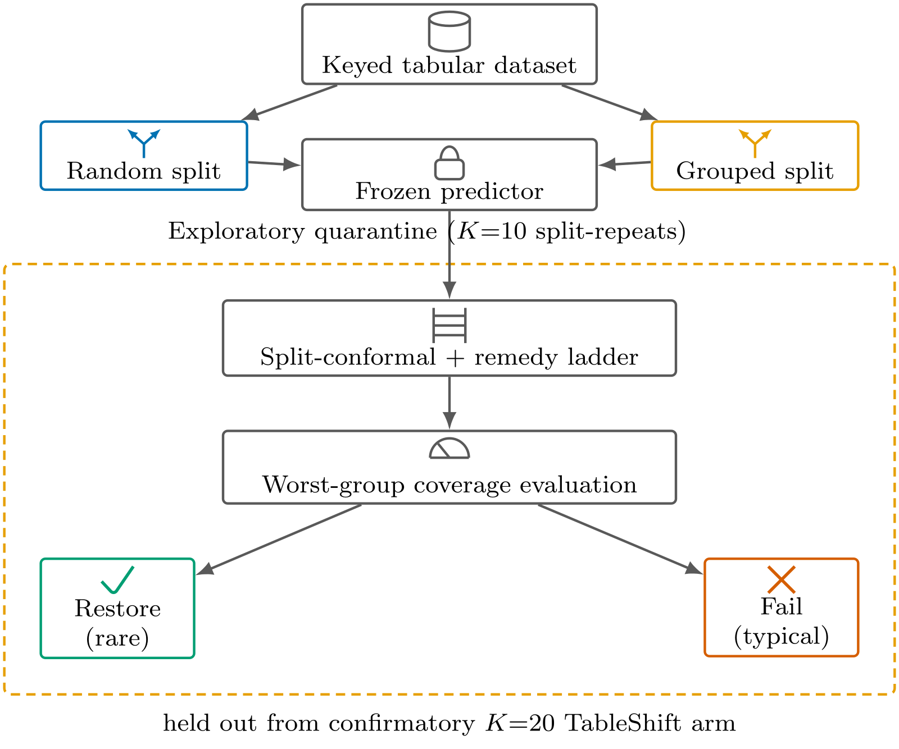
AURC, random vs grouped/time
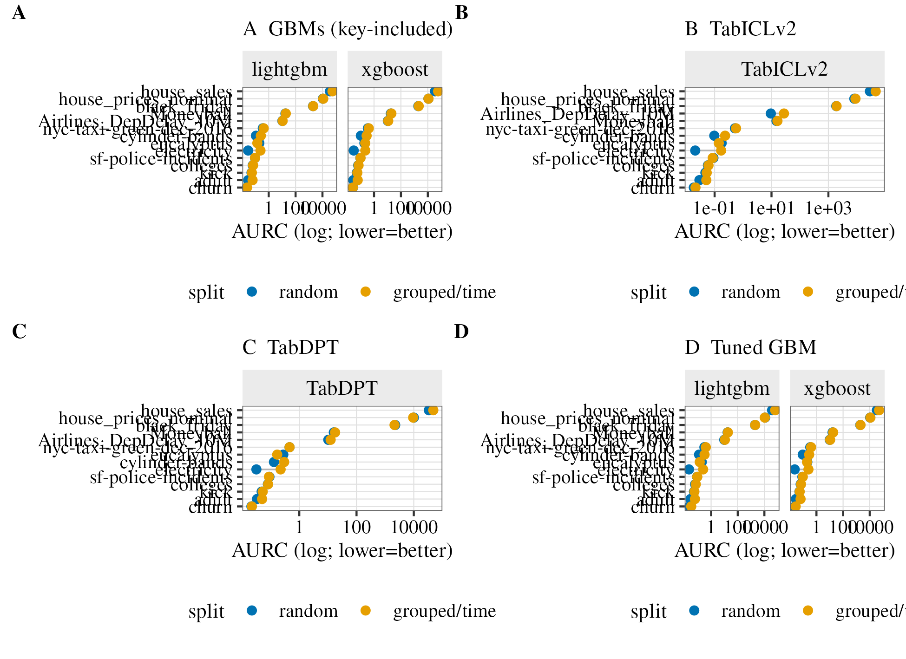
Values
| Dataset | Key | Kind | Model | AURC random | AURC grouped | Coverage grouped | Repair grouped | Repair CI |
|---|---|---|---|---|---|---|---|---|
| Electricity | date | time | XGBoost | 0.031 | 0.224 | 0.6193 | 0.389 | [0.371, 0.405] |
| Electricity | date | time | LightGBM | 0.029 | 0.244 | 0.5865 | 0.392 | [0.376, 0.409] |
| Eucalyptus | Year | time | XGBoost | 0.192 | 0.221 | 0.8966 | 0.340 | [0.218, 0.470] |
| Eucalyptus | Year | time | LightGBM | 0.201 | 0.143 | 0.8828 | 0.564 | [0.501, 0.638] |
| Adult | native-country | group | XGBoost | 0.029 | 0.061 | 0.8932 | 0.671 | [0.662, 0.680] |
| Adult | native-country | group | LightGBM | 0.030 | 0.063 | 0.8892 | 0.669 | [0.661, 0.676] |
| Cylinder bands | paper_mill_location | group | XGBoost | 0.105 | 0.281 | 0.6603 | 0.291 | [0.159, 0.412] |
| Cylinder bands | paper_mill_location | group | LightGBM | 0.113 | 0.260 | 0.7175 | 0.281 | [0.147, 0.407] |
| Churn | state | group | XGBoost | 0.027 | 0.027 | 0.9126 | 0.482 | [0.289, 0.631] |
| Churn | state | group | LightGBM | 0.023 | 0.025 | 0.8996 | 0.512 | [0.338, 0.648] |
| Moneyball | Team | group | XGBoost | 17.9307 | 19.5062 | 0.9194 | -0.025 | [-0.110, 0.063] |
| Moneyball | Team | group | LightGBM | 17.5669 | 18.7092 | 0.9169 | 0.010 | [-0.069, 0.080] |
| Kick | VNZIP1 | group | XGBoost | 0.053 | 0.057 | 0.8929 | 0.461 | [0.421, 0.502] |
| Kick | VNZIP1 | group | LightGBM | 0.053 | 0.056 | 0.8913 | 0.471 | [0.434, 0.507] |
| Black Friday | City_Category | group | XGBoost | 1972.9901 | 2106.7129 | 0.8862 | 0.266 | [0.257, 0.276] |
| Black Friday | City_Category | group | LightGBM | 1988.8982 | 2054.5947 | 0.8928 | 0.266 | [0.257, 0.274] |
| House prices | Neighborhood | group | XGBoost | 11169.5515 | 11206.2636 | 0.9471 | 0.263 | [0.215, 0.314] |
| House prices | Neighborhood | group | LightGBM | 10816.5399 | 11520.5797 | 0.9350 | 0.274 | [0.221, 0.328] |
| Colleges | state | group | XGBoost | 0.066 | 0.071 | 0.8868 | 0.339 | [0.314, 0.361] |
| Colleges | state | group | LightGBM | 0.065 | 0.069 | 0.8994 | 0.352 | [0.332, 0.374] |
| Airline delays | DayofMonth | time | XGBoost | 10.6488 | 11.4141 | 0.8718 | 0.320 | [0.278, 0.355] |
| Airline delays | DayofMonth | time | LightGBM | 10.4358 | 10.8587 | 0.8746 | 0.331 | [0.295, 0.359] |
| NYC taxi | PULocationID | group | XGBoost | 0.349 | 0.406 | 0.8915 | 0.513 | [0.494, 0.537] |
| NYC taxi | PULocationID | group | LightGBM | 0.364 | 0.425 | 0.8945 | 0.503 | [0.484, 0.525] |
| House sales | zipcode | group | XGBoost | 34323.6506 | 58225.2946 | 0.8474 | 0.268 | [0.173, 0.323] |
| House sales | zipcode | group | LightGBM | 35973.4363 | 55921.1960 | 0.8561 | 0.317 | [0.294, 0.342] |
| SF police | PdDistrict | group | XGBoost | 0.096 | 0.099 | 0.9018 | 0.143 | [0.089, 0.188] |
| SF police | PdDistrict | group | LightGBM | 0.096 | 0.096 | 0.9051 | 0.205 | [0.155, 0.252] |
Repair ratio
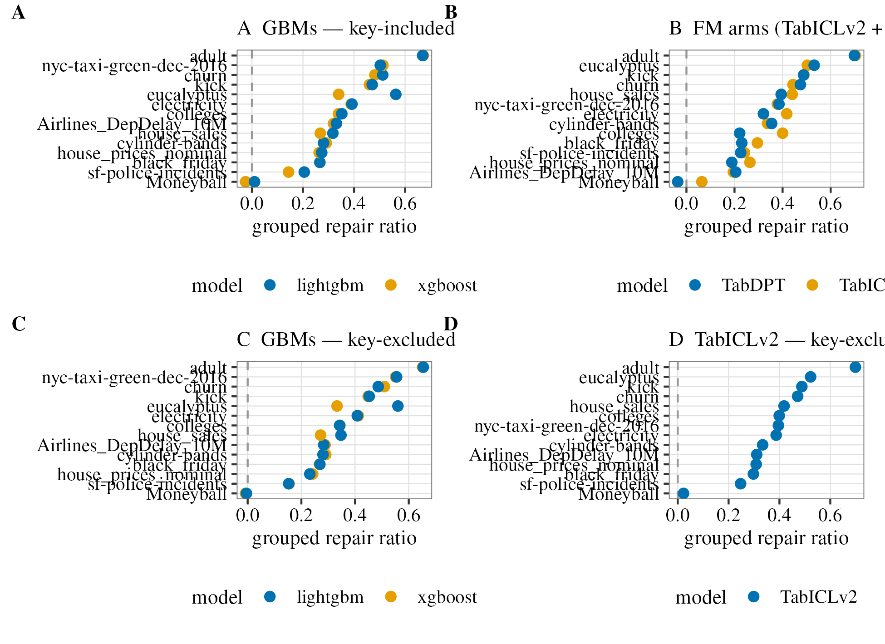
Values
| Dataset | Model | Repair grouped | Repair CI | Beats random |
|---|---|---|---|---|
| Electricity | XGBoost | 0.389 | [0.371, 0.405] | yes |
| Electricity | LightGBM | 0.392 | [0.376, 0.409] | yes |
| Eucalyptus | XGBoost | 0.340 | [0.218, 0.470] | yes |
| Eucalyptus | LightGBM | 0.564 | [0.501, 0.638] | yes |
| Adult | XGBoost | 0.671 | [0.662, 0.680] | yes |
| Adult | LightGBM | 0.669 | [0.661, 0.676] | yes |
| Cylinder bands | XGBoost | 0.291 | [0.159, 0.412] | yes |
| Cylinder bands | LightGBM | 0.281 | [0.147, 0.407] | yes |
| Churn | XGBoost | 0.482 | [0.289, 0.631] | yes |
| Churn | LightGBM | 0.512 | [0.338, 0.648] | yes |
| Moneyball | XGBoost | -0.025 | [-0.110, 0.063] | no |
| Moneyball | LightGBM | 0.010 | [-0.069, 0.080] | no |
| Kick | XGBoost | 0.461 | [0.421, 0.502] | yes |
| Kick | LightGBM | 0.471 | [0.434, 0.507] | yes |
| Black Friday | XGBoost | 0.266 | [0.257, 0.276] | yes |
| Black Friday | LightGBM | 0.266 | [0.257, 0.274] | yes |
| House prices | XGBoost | 0.263 | [0.215, 0.314] | yes |
| House prices | LightGBM | 0.274 | [0.221, 0.328] | yes |
| Colleges | XGBoost | 0.339 | [0.314, 0.361] | yes |
| Colleges | LightGBM | 0.352 | [0.332, 0.374] | yes |
| Airline delays | XGBoost | 0.320 | [0.278, 0.355] | yes |
| Airline delays | LightGBM | 0.331 | [0.295, 0.359] | yes |
| NYC taxi | XGBoost | 0.513 | [0.494, 0.537] | yes |
| NYC taxi | LightGBM | 0.503 | [0.484, 0.525] | yes |
| House sales | XGBoost | 0.268 | [0.173, 0.323] | yes |
| House sales | LightGBM | 0.317 | [0.294, 0.342] | yes |
| SF police | XGBoost | 0.143 | [0.089, 0.188] | yes |
| SF police | LightGBM | 0.205 | [0.155, 0.252] | yes |
Model-agnostic coverage
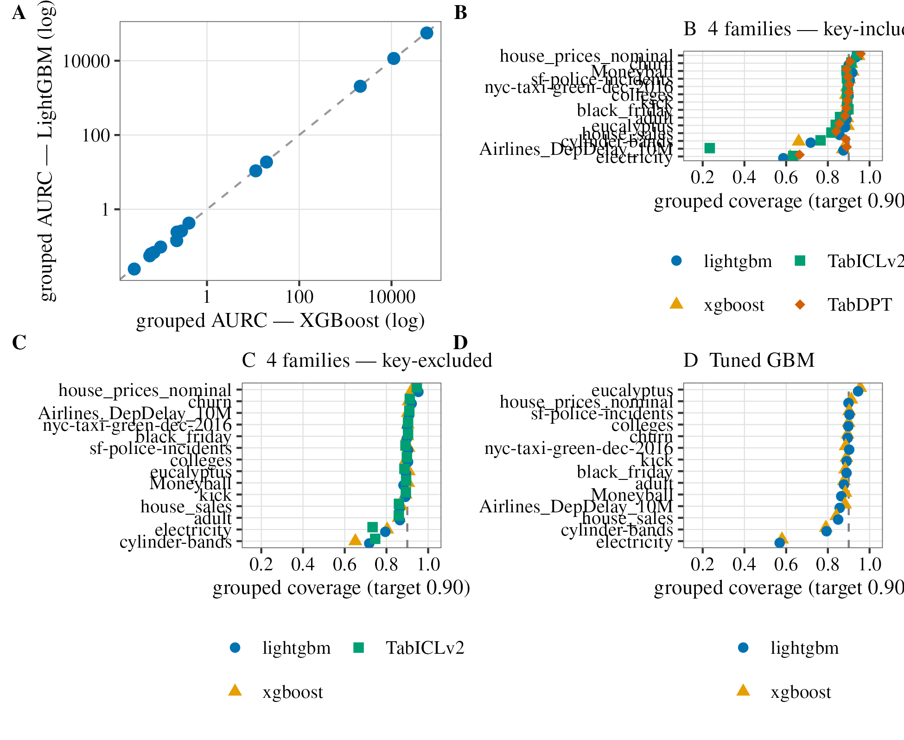
Values
| Dataset | Key | Kind | Coverage random | Coverage grouped | Gap | Repair (grouped) | Repair CI |
|---|---|---|---|---|---|---|---|
| Electricity | date | time | 0.8981 | 0.6341 | 0.264 | 0.417 | [0.396, 0.439] |
| Eucalyptus | Year | time | 0.9045 | 0.8379 | 0.067 | 0.503 | [0.400, 0.588] |
| Adult | native-country | group | 0.9019 | 0.8584 | 0.043 | 0.703 | [0.696, 0.710] |
| Cylinder bands | paper_mill_location | group | 0.8765 | 0.7651 | 0.112 | 0.337 | [0.219, 0.451] |
| Churn | state | group | 0.9067 | 0.9126 | -0.006 | 0.443 | [0.247, 0.593] |
| Moneyball | Team | group | 0.9051 | 0.8892 | 0.016 | 0.064 | [-0.011, 0.130] |
| Kick | VNZIP1 | group | 0.8954 | 0.8931 | 0.002 | 0.489 | [0.447, 0.525] |
| Black Friday | City_Category | group | 0.9054 | 0.8986 | 0.007 | 0.295 | [0.287, 0.303] |
| House prices | Neighborhood | group | 0.9521 | 0.9396 | 0.013 | 0.264 | [0.204, 0.313] |
| Colleges | state | group | 0.9141 | 0.8915 | 0.023 | 0.400 | [0.381, 0.421] |
| Airline delays | DayofMonth | time | 0.9059 | 0.2337 | 0.672 | 0.195 | [0.184, 0.204] |
| NYC taxi | PULocationID | group | 0.9013 | 0.8951 | 0.006 | 0.378 | [0.358, 0.400] |
| House sales | zipcode | group | 0.9093 | 0.8170 | 0.092 | 0.440 | [0.422, 0.458] |
| SF police | PdDistrict | group | 0.8944 | 0.8914 | 0.003 | 0.241 | [0.194, 0.285] |
Split-realization fragility
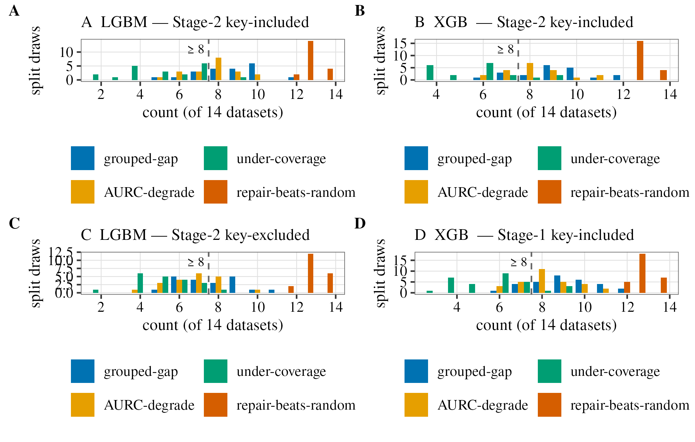
Values
| Condition | Model | Count | Median | Min | Max | Share of draws ≥ 8/14 |
|---|---|---|---|---|---|---|
| Key included | XGBoost | Grouped-gap | 9.0 | 6 | 12 | 0.800 |
| Key included | XGBoost | AURC-degrade | 8.0 | 6 | 11 | 0.700 |
| Key included | XGBoost | Undercover | 6.0 | 4 | 9 | 0.150 |
| Key included | XGBoost | Repair beats random | 13.0 | 13 | 14 | 1.000 |
| Key included | LightGBM | Grouped-gap | 9.0 | 5 | 12 | 0.750 |
| Key included | LightGBM | AURC-degrade | 8.0 | 5 | 10 | 0.650 |
| Key included | LightGBM | Undercover | 5.0 | 2 | 9 | 0.050 |
| Key included | LightGBM | Repair beats random | 13.0 | 12 | 14 | 1.000 |
| Key excluded | XGBoost | Grouped-gap | 8.0 | 5 | 10 | 0.550 |
| Key excluded | XGBoost | AURC-degrade | 7.0 | 4 | 9 | 0.200 |
| Key excluded | XGBoost | Undercover | 5.0 | 2 | 7 | 0.000 |
| Key excluded | XGBoost | Repair beats random | 13.0 | 12 | 14 | 1.000 |
| Key excluded | LightGBM | Grouped-gap | 7.5 | 5 | 11 | 0.500 |
| Key excluded | LightGBM | AURC-degrade | 7.0 | 4 | 10 | 0.300 |
| Key excluded | LightGBM | Undercover | 5.0 | 2 | 8 | 0.050 |
| Key excluded | LightGBM | Repair beats random | 13.0 | 12 | 14 | 1.000 |
Mondrian vs calibration size
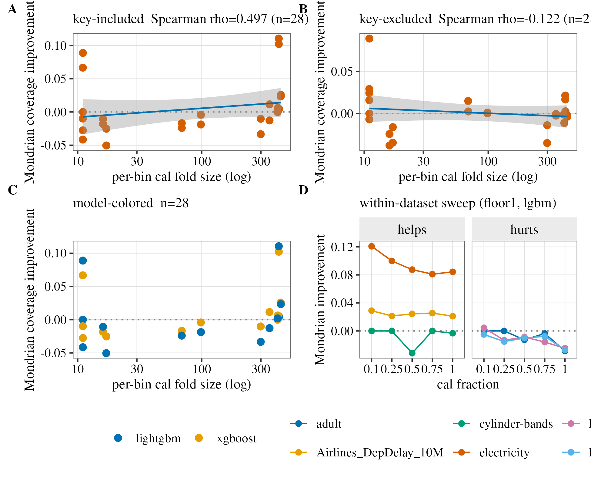
Values
| Comparison / statistic | Value |
|---|---|
| Key included Spearman rho | 0.50 |
| Key included threshold balanced accuracy | 0.854 |
| Key included gate | SUCCESS |
| Key excluded Spearman rho | −0.12 |
| Key excluded threshold balanced accuracy | 0.548 |
| Key excluded gate | KILL |
TableShift-class ACS generalization
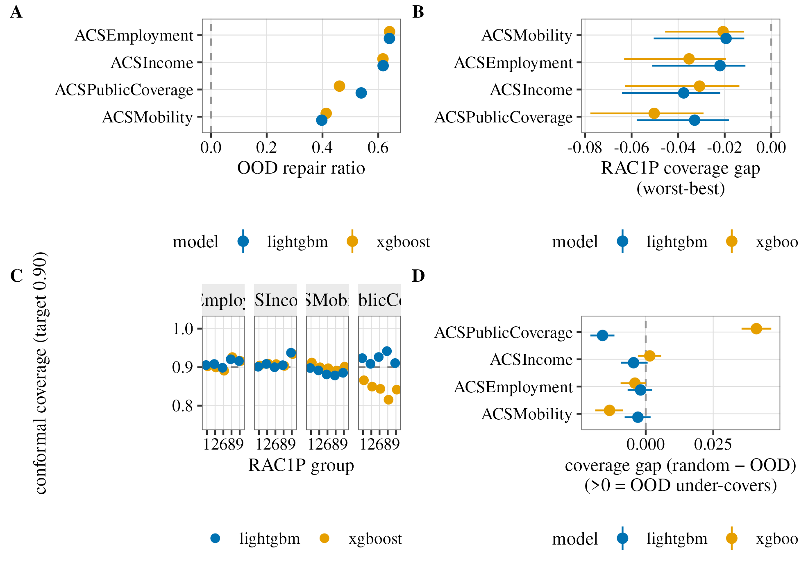
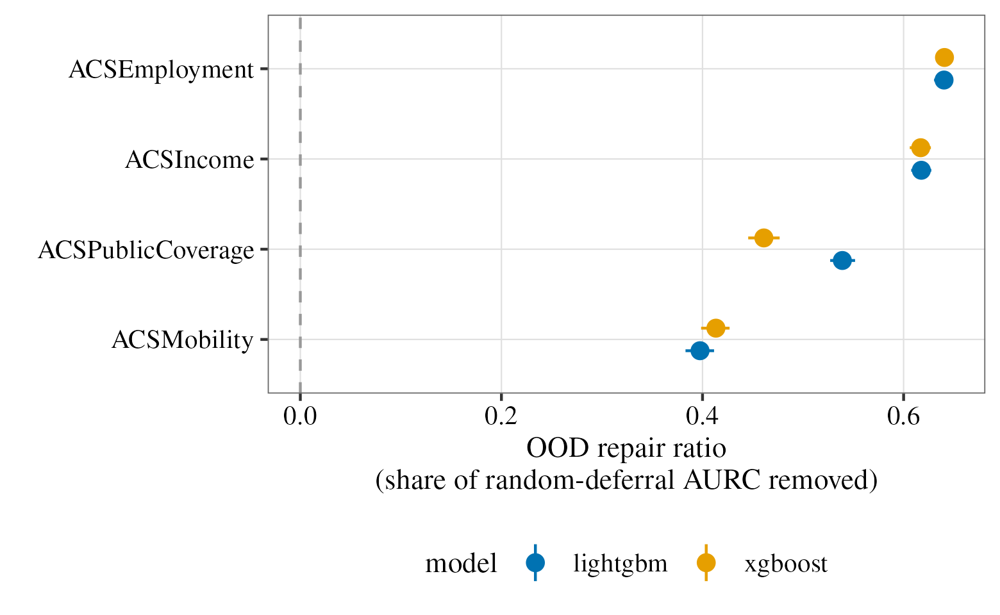
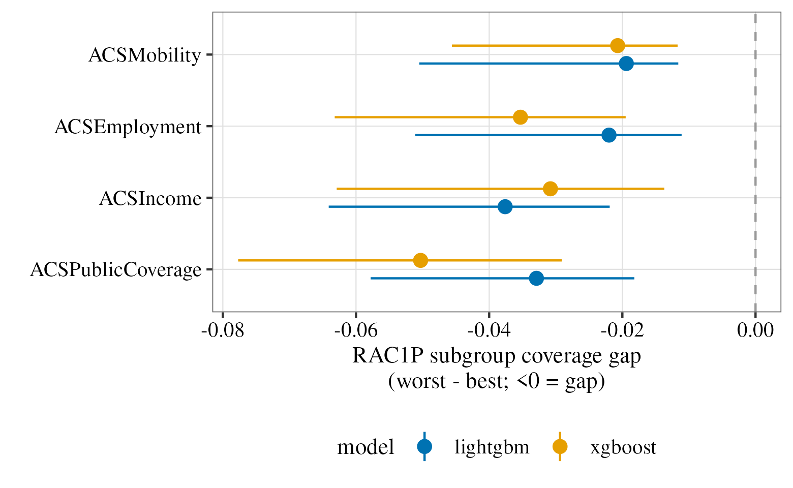
Values
| Task | Model | Coverage in-domain | Coverage OOD | Repair OOD | Repair CI | RAC1P worst−best |
|---|---|---|---|---|---|---|
| Income | XGBoost | 0.9076 | 0.9059 | 0.617 | [0.606, 0.627] | -0.031 |
| Income | LightGBM | 0.8985 | 0.9029 | 0.618 | [0.608, 0.628] | -0.038 |
| Public coverage | XGBoost | 0.9004 | 0.8596 | 0.461 | [0.445, 0.477] | -0.050 |
| Public coverage | LightGBM | 0.9048 | 0.9208 | 0.539 | [0.527, 0.552] | -0.033 |
| Mobility | XGBoost | 0.8946 | 0.9081 | 0.414 | [0.399, 0.427] | -0.021 |
| Mobility | LightGBM | 0.8919 | 0.8948 | 0.397 | [0.383, 0.411] | -0.019 |
| Employment | XGBoost | 0.8980 | 0.9022 | 0.641 | [0.632, 0.649] | -0.035 |
| Employment | LightGBM | 0.9041 | 0.9061 | 0.640 | [0.630, 0.648] | -0.022 |
RAC1P group coverage
| Task | Model | White | Black | Asian | Other | Two or more |
|---|---|---|---|---|---|---|
| Income | XGBoost | 0.9044 | 0.9093 | 0.9079 | 0.9032 | 0.9340 |
| Income | LightGBM | 0.9010 | 0.9083 | 0.8998 | 0.9050 | 0.9374 |
| Public coverage | XGBoost | 0.8659 | 0.8494 | 0.8436 | 0.8155 | 0.8416 |
| Public coverage | LightGBM | 0.9233 | 0.9086 | 0.9262 | 0.9415 | 0.9105 |
| Mobility | XGBoost | 0.9119 | 0.8996 | 0.8972 | 0.8912 | 0.9013 |
| Mobility | LightGBM | 0.8978 | 0.8916 | 0.8811 | 0.8784 | 0.8854 |
| Employment | XGBoost | 0.9022 | 0.8992 | 0.8908 | 0.9261 | 0.9159 |
| Employment | LightGBM | 0.9053 | 0.9081 | 0.8984 | 0.9205 | 0.9159 |
Post-hoc power / MDE
Supporting figure.
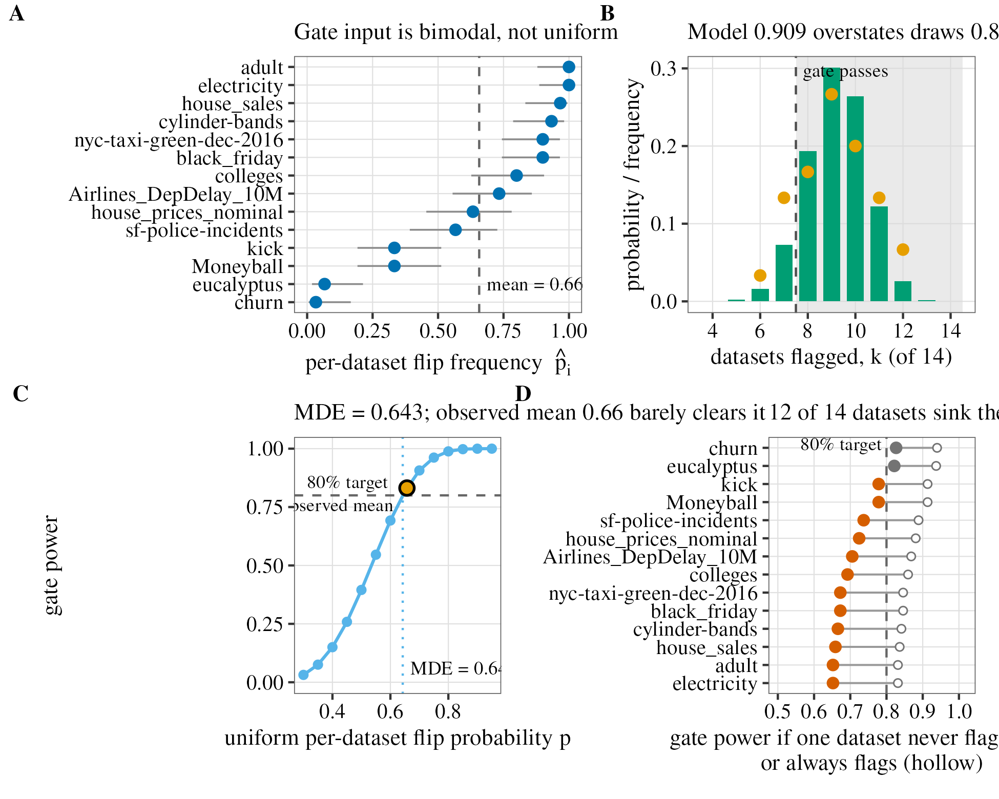
Within-dataset calibration-size sweep (negative result)
Supporting figure.
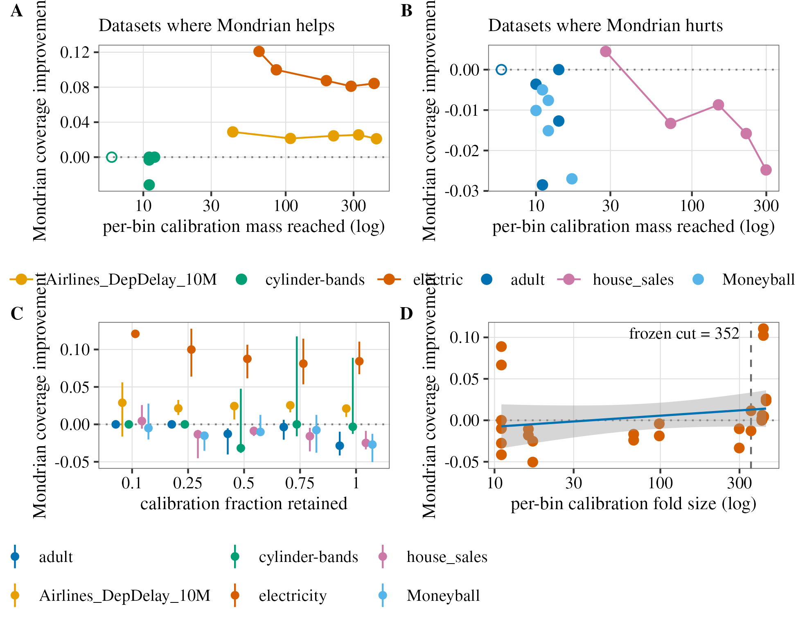